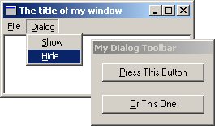

Example: dlg_two

Now we take a look at CreateDialog(), DialogBox()'s
sister function. The difference is that while DialogBox() implements
it's own message loop and does not return untill the dialog is closed,
CreateDialog() acts more like a window created with
CreateWindowEx() in that it returns immediately and depends on your
message loop to pump the messages as it does for your main window. This is termed
Modeless, whereas DialogBox() creates Modal dialogs.
You can create the dialog resource just like you did for the last dialog example, you might also want to set the "Tool window" extended style to give it's title bar the typical smaller caption of toolbars. The dialog resource I created follows:
IDD_TOOLBAR DIALOGEX 0, 0, 98, 52
STYLE DS_MODALFRAME | WS_POPUP | WS_CAPTION
EXSTYLE WS_EX_TOOLWINDOW
CAPTION "My Dialog Toolbar"
FONT 8, "MS Sans Serif"
BEGIN
PUSHBUTTON "&Press This Button",IDC_PRESS,7,7,84,14
PUSHBUTTON "&Or This One",IDC_OTHER,7,31,84,14
END
You may notice that the resource editor has replaced DIALOG with
DIALOGEX indicating we want to set an EXSTYLE on our dialog.
Next we want to create the dialog when our program runs, I want the dialog visible right
away so we do this in WM_CREATE. We also want to declare a global variable
to hold the window handle returned from CreateDialog() so that we can
use it later. DialogBox() didn't return a handle to us since when DialogBox()
returns the window has been destroyed.
HWND g_hToolbar = NULL;
case WM_CREATE:
g_hToolbar = CreateDialog(GetModuleHandle(NULL), MAKEINTRESOURCE(IDD_TOOLBAR),
hwnd, ToolDlgProc);
if(g_hToolbar != NULL)
{
ShowWindow(g_hToolbar, SW_SHOW);
}
else
{
MessageBox(hwnd, "CreateDialog returned NULL", "Warning!",
MB_OK | MB_ICONINFORMATION);
}
break;
We check the return value, which is ALWAYS a good idea, and if it's valid (not NULL) we
show the window with ShowWindow(), with DialogBox() this isn't
necessary since the system calls ShowWindow() for us.
Now we need a dialog procedure for our toolbar.
BOOL CALLBACK ToolDlgProc(HWND hwnd, UINT Message, WPARAM wParam, LPARAM lParam)
{
switch(Message)
{
case WM_COMMAND:
switch(LOWORD(wParam))
{
case IDC_PRESS:
MessageBox(hwnd, "Hi!", "This is a message",
MB_OK | MB_ICONEXCLAMATION);
break;
case IDC_OTHER:
MessageBox(hwnd, "Bye!", "This is also a message",
MB_OK | MB_ICONEXCLAMATION);
break;
}
break;
default:
return FALSE;
}
return TRUE;
}
Most of the same message handling rules apply to dialogs created with
CreateDialog() as with DialogBox(), don't call
DefWindowProc(), return FALSE for messages you don't handle
and TRUE for those you do.
One change is that we don't call EndDialog() for modeless dialogs, we can
use DestroyWindow() just like for regular windows. In this case I destroy the
dialog when the main window is destroyed. In the main window's WndProc()...
case WM_DESTROY:
DestroyWindow(g_hToolbar);
PostQuitMessage(0);
break;
Last but not least, we want to be able to display and hide our toolbar whenever we choose so I've added two commands to my menu to do this, and handled them so:
case WM_COMMAND:
switch(LOWORD(wParam))
{
case ID_DIALOG_SHOW:
ShowWindow(g_hToolbar, SW_SHOW);
break;
case ID_DIALOG_HIDE:
ShowWindow(g_hToolbar, SW_HIDE);
break;
//... other command handlers
}
break;
You should be able to create your own menu using the resource editor or manually, but if not (as always) take a look at the example project dlg_two provided with the tutorial.
Now when you run the program, you should be able to access both the dialog window, and main window at the same time.
If you've run the program at this point and tried tabbing between the two buttons, you have probably
noticed it doesn't work, neither does hitting Alt-P or Alt-O to activate the buttons.
Why not? Whereas DialogBox() implements it's
own message loop and handles these events by default, CreateDialog() does not.
We can do it ourselves though, by calling IsDialogMessage() in our message loop
which will do the default processing for us.
while(GetMessage(&Msg, NULL, 0, 0))
{
if(!IsDialogMessage(g_hToolbar, &Msg))
{
TranslateMessage(&Msg);
DispatchMessage(&Msg);
}
}
Here we first pass the message to IsDialogMessage(), if the message is
destined for our toolbar (indicated by the window handle we pass in) the system will
perform the default processing and return TRUE. Is this case the message
has already been handled so we don't want to call TranslateMessage() or DispatchMessage().
If the message is for another window we process as usual.
It's also worth noting that IsDialogMessage() can also be used with windows that aren't dialogs
in order to to give them dialog-like behaviour. Remember, a dialog is a window, and most (if not all)
dialog APIs will work on any window.
And that is pretty much all there is to modeless dialogs! One issue that may arise is if
you have more than one toolbar... what do you do? Well one possible solution is to have
a list (either an array, an STL std::list, or similar) and loop through it in your message
loop passing each handle to IsDialogMessage() until the right one is found, and
if none, do the regular processing. This is a generic programming problem, not one that is
Win32 related, and is left as an excersize to the reader.